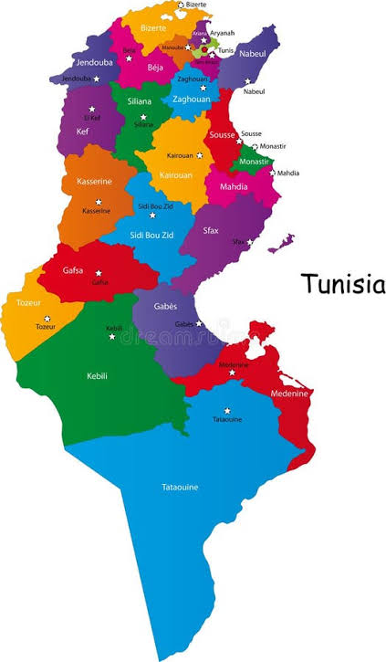

Voyage Autour de l'Artisanat Tunisien
Découvrez l'origine de nos produits d'exception en cliquant sur les régions de Tunisie.
Carte des Artisans 🇹🇳

🗺️
Explorez nos régions
Chaque région tunisienne possède un savoir-faire artisanal unique. Cliquez sur une ville sur la carte pour découvrir son histoire et ses produits !